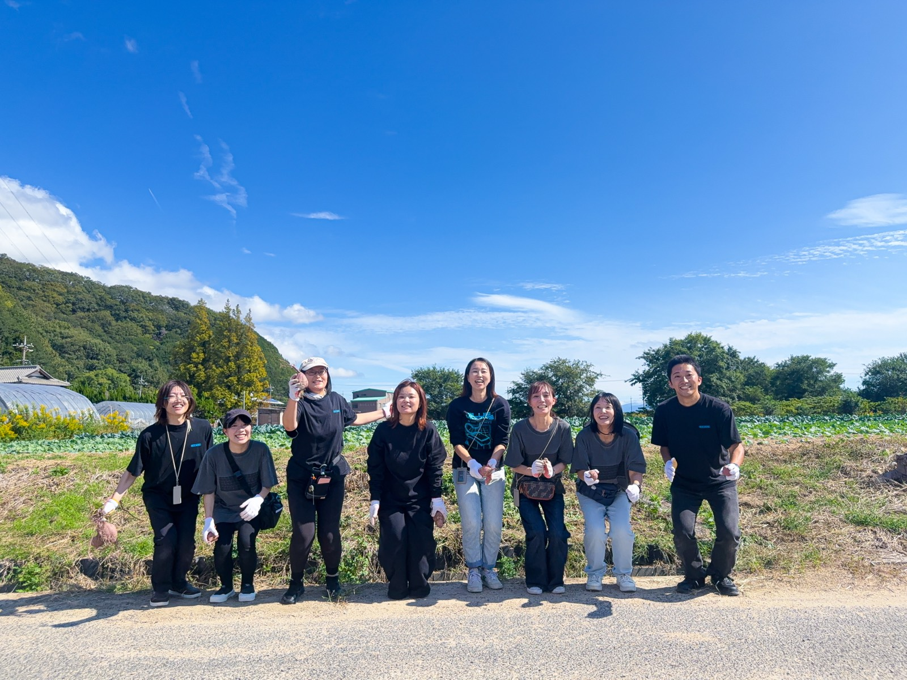
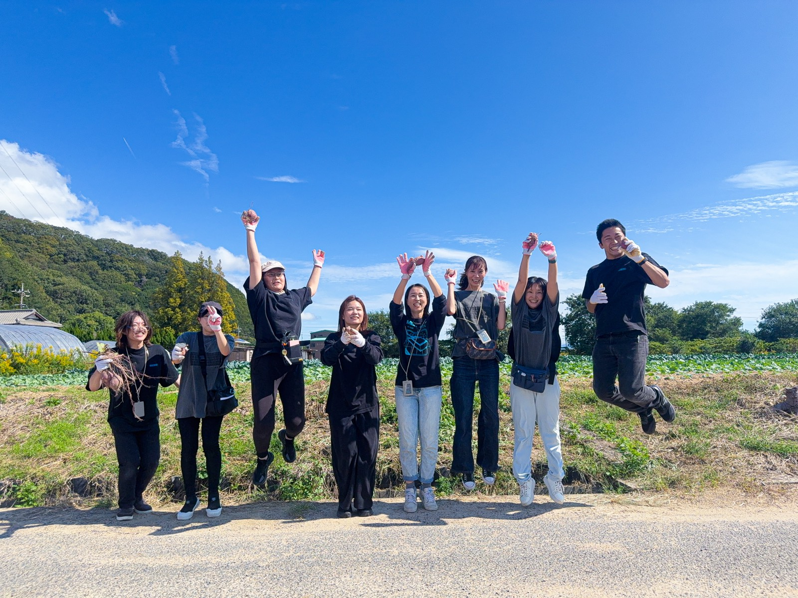

Recruit
自分らしく、働く。
募集していた人数を超えるご応募をいただき、ありがとうございます。現在は受付を止めています。
事業拡大にともない、2027年夏ごろに再度募集を行う予定です。日程が決まりましたら、このページとInstagramでお知らせします。
Open Office
募集は見合わせていますが、「どんな場所なのか、一度見てみたい」という方のために、人数を限って職場見学の機会をつくれたらと考えています。こどもたちとスタッフが普段どう過ごしているかを、そのままご覧いただく形を予定しています。
※ 現時点では予定です。実施の有無や日程は、決まり次第Instagramでお知らせします。
見学の告知はInstagramで行います。人数が限られますので、
フォローと通知をオンにしてお待ちください。


Recruit
働き方も、職場のしくみも、まだ作っている途中です。募集を再開したときは、整った環境で働きたい方よりも、一緒に作ることを面白がれる方をお迎えしたいと考えています。